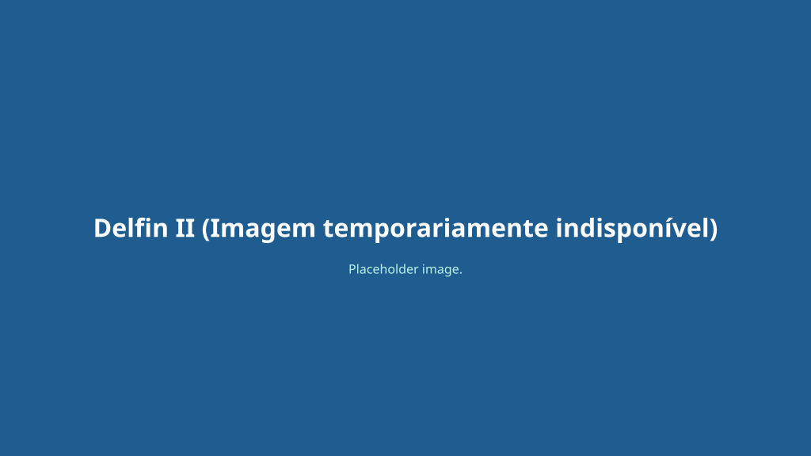

Um riverboat boutique com design projetado para a Amazônia peruana, oferecendo exploração intimista com 14 suítes e capacidade para até 28 hóspedes.

O Delfin II foi construído em 2009 especialmente para navegar nas águas da Amazônia peruana e é operado em parceria pela Lindblad Expeditions e a Delfin Amazon Cruises. Ele foi projetado para oferecer uma experiência imersiva e sustentável na floresta.
O design do navio reflete o ambiente ao seu redor, utilizando madeiras nobres da região, decoração artesanal peruana e amplas janelas que mantêm os hóspedes conectados com a natureza durante toda a viagem.
As expedições incluem passeios diários em lanchas (skiffs), trilhas em terra, caiaque, observação de vida selvagem e visitas a comunidades ribeirinhas locais, sempre acompanhadas por guias naturalistas experientes.
A bordo, o navio oferece um ambiente refinado com foco na gastronomia regional autêntica, lounge com vistas panorâmicas, sala de jantar, sala de palestras e decks de observação abertos.
* Planta resumida por áreas. Para o mapa interativo e detalhado de cabines, acesse Lindblad Expeditions — deck plans.